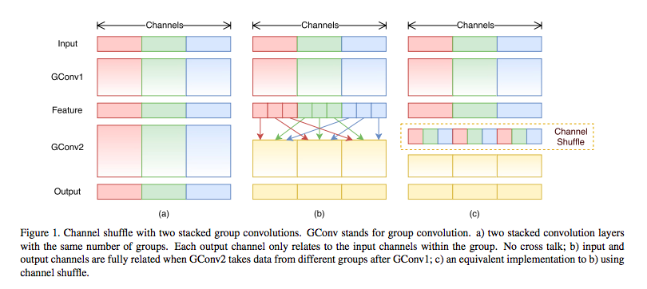
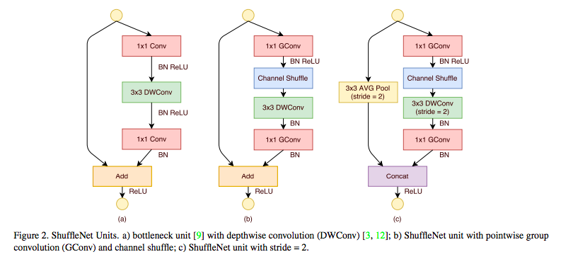

论文：ShuffleNet: An Extremely Efficient Convolutional Neural Network for Mobile Devices
作者：Xiangyu Zhang，Xinyu Zhou，Mengxiao Lin，Jian Sun
ShuffleNet 是应用在移动设备上的高效架构，思想是通过逐点群卷积 pointwise group convolution 来降低计算量，再用Channel shuffle帮助信息交流。ShuffleNet 是在group convolution 和 深度可分卷积 depthwise separable convolution 上的扩展。相比其他模型，在某个计算量范围下，shuffleNet 能够利用到更多的特征映射通道，使得一个小型网络能编码更多信息。
1. Channel Shuffle for Group Convolutions
group convolutions 通过让每个卷积操作只在对应的channel group上进行，让通道稀疏连接，显著降低了计算量。但这样减少了通道之间的信息交流，会降低模型的表达能力。
所以，如果可以让 group convolutions 得到不同组的输入数据，那么输出和输入的通道就相当于是全关联的，即Figure 1中 (b) 的效果：

所以ShuffleNet 对于上一层的输出通道，先做一个Shuffle操作，再分成 group 传入下一层。Shuffle 实现的方法是，假设一个卷积层的channel 分为 $g$ 组，每组有 n 个channel，那么输出一共有 $g \times n$ 个通道：
- （1）reshape 成 $(g, n)$
- （2）转置为 $(n, g)$
- （3）一行一行 flatten 分成 g 组作为下一层输入
把 Channel Shuffle 作为一个 Shuffle unit 加到 Group Convolutions 后面：

（a）是将残差模块中的标准3x3卷积以mobilenet中的方式拆分成深度可分离卷积。
（b）把第一个1x1conv 和 最后一个1x1conv改为1x1GConv；
（c）是下采样的ShuffleNet Unit，在辅分支上加了AVG pooling，把元素相加变为通道级联，扩大channel 维度。